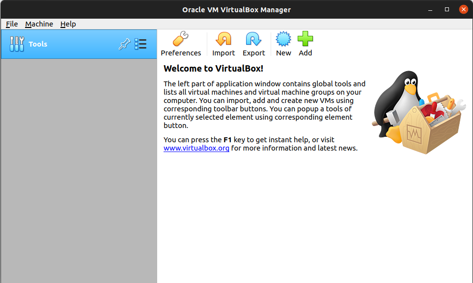

What is linux?
Linux is an operating system used on mobile devices (Android), the cloud, embedded systems, desktops and servers. An operating system is a bit of software that manages the connection between software and hardware.
Linux is based on the unix operating system which was developed in 1969. Unix was a proprietary operating system and not open source, Linus Torvalds developed the Linux kernel as an open source alternative and released the first version in 1991. Linux is released under a General Public Licence, which means users are free to run, study, share and modify the software.
Linux Kernel
A kernel is the part of an operating system that communicates with the hardware. It is responsible for managing the resources of a computer (the CPU, storage etc). The Linux kernel is based on the original Unix Kernel.
Distributions
A Linux distribution is an operating system package containing the Linux kernel and a package management system (a way of accessing software). There are many different distributions, some of which target particular groups of users such as education, enterprise or developers.
Some of the most popular distributions are:
- Ubuntu
- RedHat
- Debian
- Fedora
But there are many more.
Ubuntu is the distribution we will be using for this course. It's great for beginners but also provides all the tools we need for both Software Development and Cloud Engineering.
Ubunutu comes in three different forms
- Desktop
- Server
- IoT
We will be using the desktop version of ubuntu. It comes with the Linux kernel, a Graphic User Interface, free open source software and access to a package manager.
Installing Ubuntu
Ubuntu can be downloaded at the above link.
There are many different versions of Ubunutu but we will be using the current LTS (Long Term Support). The LTS versions of Ubuntu are the most stable and are given security updates by canonical (the creators of Ubuntu) for a longer time compared to the non LTS versions.
The current LTS version is 22.04.
There are multiple ways to install Ubuntu once we have downloaded it.
We could install it as our primary Operating System, similar to how you currently have Windows or Mac OS installed, however that would mean either creating a partition on your hard drive or completing replacing your current operating system.
For ease of use, we will be running Ubuntu in what's known as a virtual machine.
Virtual Box
Virtual Box is a piece of software that we can use to create a virtual machine. You can think of a virtual machine as a virtual computer running inside your actual computer.
Virtual Box runs on all major operating systems.
You can download Virtual Box by visiting and downloading the appropriate version for your OS.
https://www.virtualbox.org/wiki/Downloads
When opening Virtual Box for the first time, it should look similar to the image below. There may some variation depending on which OS you are using.

To create a new VM (Virtual Machine), we need to click new.
Select the below settings, with the exception of "Machine Folder" which should reflect a file path for your own machine.
We will need to allocate an amount of RAM for the virtual machine to use, this will vary depending on how much you have on your computer, but I would recommend at least 4096MB, if possible.
We also need to allocate some storage space for our virtual machine to use. Once again This will depend on the storage space you have available but I would recommend at least 50GB for our purposes. Virtual Box will ask you which type of storage we want to use, the options it gives us are essentially just different formats. We will be using VDI (VirtualBox Disk Image).
We also have the option of choosing between Dynamically sized storage and Fixed size storage. VirtualBox explains the difference, we will be using Dynamically Sized.
We can now see that VirtualBox has created our virtual machine for us.

There are a couple of settings we need to change. You can access settings by clicking the settings icon.
We are going to change the following settings.
- General -> Advanced -> Shared Clipboard -> Bidirectional
- System -> Processor -> Processors -> 2CPU
- Display -> Screen -> Enable 3D Acceleration
- Storage, This is where we will add the Ubuntu image we downloaded earlier
Select IDE -> Empty -> Press the disk icon on the right hand side -> Choose a disk file -> Select the Ubuntu file we downloaded earlier.
Once you're happy with your changes hit the ok button.
To start the VM, press the green start button.
.
When we create an instance we are actually invoking something called the constructor. Every Java Class has a constructor even if we haven't made one, that's because the JDK automatically gives each Class a parameterless constructor. The issue we currently have is no matter how many instances we create, their properties are all going to have the same values. By creating our own constructor, we can specify these values when creating an instance.
Creating our own constructor
public class Person {
private String name;
private int age;
public Person(String name, int age) {
this.name = name;
this.age = age;
}To create a constructor we must declare a method that has the same name as our class. It is essential that we use the same name. The method must also be public. The parameters for the method should be the properties that we wish to set the values of when creating an Object, in this example i've used name and age. Within the constructor you'll notice we've used the "this" keyword. The "this" keyword refers to the particular instance we're calling the constructor on. In other words "set THIS instance's name to be equal to the name that will be passed in when creating a new object"
You will also notice that when i've initially declared our properties I haven't assigned them values, that's because the values will be set when we create our instances and thus invoke the constructor method.
Invoking the constructor
Let's use our newly defined constructor to create an instance of our Class.
public class Main {
public static void main(String[] args) {
Person ash = new Person("Ash", 25);
}
}I said earlier that Person( ) invokes the constructor method so therefore it makes sense that we pass in the values we want to used in the constructor as arguments. The values of name and age will now be set to "Ash" and 25 respectively. The massive advantage of using a constructor in this way is we can now create many objects each with unique data.
Person sam = new Person("Sam", 23);Here the value of name will be "Sam" and the value of age will be 23. Remember that Java is statically typed and the type of our arguments must match what we specified in our parameters.
Earlier we made our Class properties private, we highlighted that this was beneficial as we are able to restrict access to our data. However we still need to be able to access and even update this data. We can achieve this using getters and setters.
Getters
A getter is a public method that returns the value of a property. This allows us to keep the property itself within the private scope but still be able to access it, without the risk of modifying its value.
public String getName() {
return name;
}The name of the method should be "get" followed by the name of the property. In this case, we want to return the "name" property, so our method is called "getName". When declaring methods we need to specify what type of data will be returned, name is a String, so we specify String just before the method name.
We can use this method by invoking it on an instance of the Class and it will return the value relevant to that particular instance.
ash.getName();In this example, the getter will return "Ash" as that's the value for name we passed into the constructor earlier.
sam.getName();Invoking getName( ) on the sam object will return "Sam".
Setters
A setter is a public method that updates the value of a property. You might be thinking, if we are going to update the value of a property, then what was the point in making it private? That's a great question, the massive advantage of using a setter is that we can include code within the method that controls what can happen to the value. More on this shortly.
public void setAge(int age) {
this.age = age;
}Our setter method should be called "set" followed by the name of the property to be set, in this case "setAge". Our setter won't actually return anything so instead of specifying a return type we use void (void is used when our function carries out an action but doesn't actually need to return anything). Our setter method needs a parameter, the new value of the property. This type of this parameter must match the type it was initially declared as.
As mentioned, the big advantage of using a setter method is that we can restrict the new value of the property. For example, it wouldn't make sense if age could be set to a negative number. To stop this happening we could include an if statement in our method.
public void setAge(int age) {
if (age < 0) {
System.out.println(age + " is not a valid age");
}
else {
this.age = age;
}
}In this example, if age < 0 we print a message stating the provided age is not valid.
Constructor overloading is a way we can have multiple constructors within a single Class. Our current constructor requires two arguments, name and age, what if we wanted to specify just one of those values and perhaps use a default value for the other, whilst still being able to use our original constructor if we wanted to create an instance which has two custom values. Well, Java allows us to do just that.
public class Person {
private String name;
private int age;
public Person(String name, int age) {
this.name = name;
this.age = age;
}
public Person(String name) {
this.name = name;
this.age = 30;
}Our Person Class now has two constructors, your initial reaction might be that this is going to cause some type of error as they both have the same name, well constructors always need to have the same name as the Class they belong to and these two constructors are made unique by their parameters. The first constructor takes two arguments and the second takes one.
So which constructor is used when we invoke the .Person( ) method? Well that depends on how many arguments we give it. If we pass in two arguments the first constructor will run, if we pass in just the first argument, the second constructor runs. Note that in the second constructor we have manually set the value of age to be 30, this means if we create an Instance and pass in the name argument, age will be automatically set to 30. Imagine a world in which everyone was always 30!
Person andy = new Person("Andy");
System.out.println(andy.getAge());We can test this by creating a new Instance and just passing in a single argument. To confirm that this new object does in fact have an age property we can run the getAge( ) getter.
We can create as many of these overloaded constructors as we like, we can even create one that doesn't take any parameters and both name and age are set to a value defined in the constructor.